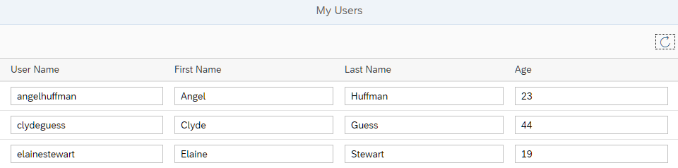

Table that is bound to the
People entity set initially requests its data, and how the data can be
refreshed. We use the Console tab in the browser developer tools to
monitor the communication between the browser and the server. We see the initial request as
well as the requests for refreshing the data.
You can view and download all files at OData V4 - Step 2.
sap.ui.define([ "sap/ui/core/mvc/Controller", "sap/m/MessageToast", "sap/m/MessageBox", "sap/ui/model/json/JSONModel" ], function (Controller, MessageToast, MessageBox, JSONModel) { "use strict"; return Controller.extend("sap.ui.core.tutorial.odatav4.controller.App", { onInit : function () { var oJSONData = { busy : false }; var oModel = new JSONModel(oJSONData); this.getView().setModel(oModel, "appView"); }, onRefresh : function () { var oBinding = this.byId("peopleList").getBinding("items"); if (oBinding.hasPendingChanges()) { MessageBox.error(this._getText("refreshNotPossibleMessage")); return; } oBinding.refresh(); MessageToast.show(this._getText("refreshSuccessMessage")); }, _getText : function (sTextId, aArgs) { return this.getOwnerComponent().getModel("i18n").getResourceBundle().getText(sTextId, aArgs); } }); });
We add the event handler onRefresh to the controller. In this
method, we retrieve the current data binding of the table. If the binding has
unsaved changes, we display an error message, otherwise we call
refresh() and display a success message.
At this stage, our app cannot have unsaved changes. We will change this in Step 6.
_getText to retrieve translatable texts
from the resource bundle (i18n model).
...
<Page title="{i18n>peoplePageTitle}">
<content>
<Table
id="peopleList"
growing="true"
growingThreshold="10"
items="{
path: '/People'
}">
<headerToolbar>
<OverflowToolbar>
<content>
<ToolbarSpacer/>
<Button
id="refreshUsersButton"
icon="sap-icon://refresh"
tooltip="{i18n>refreshButtonText}"
press=".onRefresh"/>
</content>
</OverflowToolbar>
</headerToolbar>
<columns>
...We add the headerToolbar with a single Button to
the Table. The button has a press event to which
we attach an event handler called onRefresh.
# App Descriptor ... # Toolbar #XTOL: Tooltip for refresh data refreshButtonText=Refresh Data # Table Area ... # Messages #XMSG: Message for refresh failed refreshNotPossibleMessage=Before refreshing, please save or revert your changes #XMSG: Message for refresh succeeded refreshSuccessMessage=Data refreshed
We add the tooltip and message texts to the properties file.
To get more insight into the client-server communication, we open the Console tab of the browser developer tools and then reload the app.
To monitor the client-server communication in a productive app, you would use the Network tab of the developer tools.
In this tutorial, we are using a mock server instead of a real OData service so that we can run the code in every environment. The mock server does not generate any network traffic, so we use the Console tab to monitor the communication.
If you want to switch to the real service, do the following:
In the index.html file, remove the line
data-sap-ui-on-init="module:sap/ui/core/tutorial/odatav4/initMockServer".
Check the URI of the default data source in the
manifest.json file. Depending on the
environment, change it to something that avoids cross-origin
resource sharing (CORS) problems. For more information, see Request Fails Due to Same-Origin Policy (Cross-Origin Resource Sharing - CORS)
We search for the following mock server requests:
https://services.odata.org/TripPinRESTierService/(S(id))/$metadata
This first request fetches the metadata that describes the entities of the service (see also OData Version 4.0. Part 3: Common Schema Definition Language (CSDL) Plus Errata 03).
The server responds with an XML file that describes the entities, for
example, entity type "Person" has several properties such
as UserName, FirstName,
LastName, and Age.
The URL contains the session ID (S(id)). Since the
public TripPin service can be used by multiple
persons at the same time, the session ID separates read and write
requests from different sources. You could use a different ID or request
the service without a specified session ID. In the latter case, you will
get a response with a new, random session ID.
The second request fetches the first 10 entities from the OData service. The
growingThreshold="10" setting in the implementation of
the Table control in the App.view.xml
file defines that only 10 entities are fetched at the same time from the
'/people' path. Further data is only loaded when
requested from the user interface (growing="true").
Therefore, there are only 10 entities requested at the same time by using
$skip=0&$top=10 (see System Query Option $top and $skip in the Basic
Tutorial on the OData home page.)
This request explicitly lists the fields that should be included in the
response by using the $select query option. Although the
TripPin service has more fields in its
People entity set, only those four are included in the
response. This is a feature of the OData V4 Model called "automatic
determination of $select", or
"auto-$select". It helps restricting the size of
responses to what is really needed. The ODataModel computes
the required fields from binding paths specified for controls. This feature
is not active by default. In our case, this is activated by setting the
autoExpandSelect property to true when
instantiating the model in the manifest.json descriptor
file .